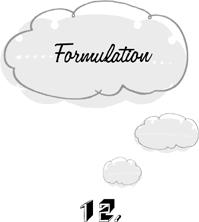

{% include JB/setup %}
{% raw %}
<div>

<h1 id="filepos215497" class="calibre19"><span class="calibre20"><span class="bold"><a class="calibre21"></a><a class="calibre21"></a></span></span></h1><div class="calibre16"> </div>
<p class="calibre22">                 <a class="calibre23"></a><a class="calibre23"></a><em class="calibre9">ormulation</em> is the trap of indiscriminately saying or thinking something just because it seems to be true. We’re not content to marvel at a spectacular sunset. We also have to <em class="calibre9">note</em> that it’s a Marvelous Sunset, if only to ourselves. We say “Oooh” and “Aaah” and “Isn’t it a Marvelous Sunset”? and “Aren’t we Having a Good Time?” If a news reporter or a myopic friend had asked us to comment on the quality of the sunset, a brief description would be nothing more than benevolence. But what, exactly, is the point of describing these things to <em class="calibre9">ourselves?</em></p>
<p class="calibre22">Concept-making and describing are powerful tools. Without them, we would derive very little benefit from the experience of others. One after another, we would nibble at the same deadly fungus and fall into the same ravine. We would have no help in discovering the orderliness of the seasons, the movements of the sun and the moon, and the stages of human life. In sum, we would be indistinguishable from any other large land mammal. Nevertheless, there are also disadvantages to <a class="calibre23"></a>saying what a thing is. We fall into the trap of formulation when we bring these disadvantages upon ourselves without compensation.</p>
<p class="calibre22">The most obvious disadvantage of formulation is that it leads to <em class="calibre9">division.</em> Every time we describe or evaluate an experience before it’s over, we are doing two things at once. On the one hand, we’re watching a sunset; on the other hand, we’re talking or thinking about it. We’ve already seen how division destroys pleasure. We can’t really watch a sunset and evaluate it at the same time, for the activity of evaluating takes our attention away from the sensual experience. The moment we say “Isn’t it Marvelous?” we’re no longer marveling.</p>
<p class="calibre22">Our experience is even more drastically curtailed if we fall prey to <em class="calibre9">public formulation</em>, wherein we strive to write it all down or tell it to a friend before we forget. In this trap, we act as though experiences counted for nothing until they entered the public domain. A beautiful sunset or an entertaining thought becomes a burden to be unloaded as quickly as possible. We rush away from pleasure immediately upon perceiving it, so that we may communicate it to the world. Good news oppresses us until we lay hold of pen and paper or a receptive ear. We “can’t wait” to tell.</p>
<p class="calibre22"><a class="calibre23"></a>Photography introduces a new dimension to the art of public formulation. There are people who curse their fate for coming upon an interesting sight when they’ve left their camera at home. They would rather have <em class="calibre9">nothing.</em> With the advent of home video equipment, we will soon be recording every moment of the day in three dimensions and stereophonic sound. And we’ll spend the next day watching the playback, and the day after that watching ourselves watch the playback …</p>
<p class="calibre22">The public formulator supposes that experiences don’t count unless they make an impression beyond the confines of his own mind. Those of us who are free of this delusion may yet labor under the equally groundless assumption that experiences don’t count unless we formulate them <em class="calibre9">inwardly.</em> We remember Socrates’ advice: the unexamined life is not worth living. We think that if we don’t <em class="calibre9">note to ourselves</em> that we’re having a valuable experience, we might as well not have it at all. This causes us to engage in <em class="calibre9">private formulation.</em></p>
<p class="calibre22">But Socrates was the principal architect of a disastrous confusion between <em class="calibre9">thinking</em> and <em class="calibre9">consciousness</em> that has ever since bedeviled Western culture. As we demonstrated in the first chapter, thinking and consciousness are entirely <a class="calibre23"></a>different mental processes. We often think unconsciously, and we may be fully conscious without entertaining a single idea. Now it’s true that we have to be <em class="calibre9">conscious</em> of our experience in order to enjoy it. We can’t marvel at a sunset that passes unnoticed. But it isn’t necessary to <em class="calibre9">think</em> about the experience, or to speak its name. On the contrary, the never-ending litany of formulas that usually accompany experiencing—“Good food! Yum-yum! This is terrific!”—serve only to diminish pleasure by dividing our attention.</p>
<p class="calibre22">Certain of life’s experiences are not merely diminished by formulation. Their very existence depends on our refraining from speaking their name, even in the privacy of our own mind. They are regions of the Universe that remain forever closed to the formulator. For example, the enjoyment of humor requires us to suspend our formulative tendencies. We can’t simultaneously <em class="calibre9">experience</em> funniness and describe what makes it funny. The explanation of a joke doesn’t get laughs. If we insist on saying what everything is, we will always be grim.</p>
<p class="calibre22">A textbook-perfect example of an experience killed by the slightest brush with formulation is the aesthetic appreciation of mystery. Connoisseurs <a class="calibre23"></a>of this experience are rare nowadays. We move so quickly to fit every situation into our conceptual scheme that we no longer know the pleasures of bafflement and speechless wonder. We see mystery only as a problem to be alleviated by “further research.” We await the day when science takes the mystery “out of” acupuncture, hypnosis, or flying saucers, supposing this to be an unalloyed good. But the tailoring of conceptual schemes to fit phenomena (or vice versa) is only one of the games in town. To be sure, it’s a game that has enjoyed a great deal of prestige in the last few hundred years. The pursuit of intellectual knowledge has the lofty status that was once reserved for the service of God. But knowledge, like every other commodity, has its costs, and it’s an unwise shopper who pays more than a thing is worth. We wouldn’t willingly lose our eyesight for the knowledge of what our neighbors ate for breakfast this morning. And laundering the Universe clean of mystery is very much like going blind. For mystery isn’t just an absence of knowledge—it’s an experience in its own right, palpable as an itch.</p>
<p class="calibre22">The key to the arcane realm is a mind free of useless opinions.</p>
<p class="calibre4"></p><div class="calibre5"> </div>
<p class="calibre24"><a class="calibre23"></a>Our needless <em class="calibre9">descriptions</em> of the world have an uncanny knack of turning into arbitrary <em class="calibre9">prescriptions</em>, catapulting us from <em class="calibre9">formulation</em> into <em class="calibre9">regulation.</em> We pointlessly tell ourselves that we’re Cleaning the House, intending only to describe our present condition. But immediately we feel as though we’re under an obligation to ensure the continuing veracity of our words. We ruefully turn down invitations to other activities on the grounds that we are, after all, Cleaning the House. We can’t stop to chat with a friend because we’re Going Somewhere. We won’t take the smelly garbage out of the kitchen because we’ve already begun to Rest. From the fact that something <em class="calibre9">is</em>, we jump to the conclusion that it <em class="calibre9">must</em> be.</p>
<p class="calibre22">Sometimes we formulate enduring traits for ourselves such as Social Ineptitude, Excitability, or an abiding Aversion to Vegetables. These descriptions too are quickly transformed into their prescriptive counterparts. But in this case the obligations incurred are lifelong. Having committed ourselves to the view that we’re “the sort of person who” hates vegetables, we’re called upon again and again to sustain the truth of our self-description. We can’t make ourselves constitutionally Averse to Vegetables or Socially Inept in <a class="calibre23"></a>one fell swoop. The feat requires a disciplined adherence to the formula-turned-regulation we have adopted. We must perpetually resist the stream of impulses from within and invitations from without to act in new ways. Self-definition is self-mutilation on a heroic scale.</p>
<p class="calibre22">This isn’t to say that we lack all consistency of personality. Even if we cease to formulate our character, an external observer will be able to detect recurring patterns in our choices and reactions. But we can’t formulate the results of such observations for <em class="calibre9">ourselves</em> without producing certain drastic effects. The opinion that one is excitable or socially inept is itself a major cause of excitability or social ineptitude. Beliefs about the self are self-fulfilling prophecies, and the fulfillment of the prophecy in turn welds us ever more strongly to the belief that engendered it. Our formulas for ourselves are at once true and profoundly misleading. The Man Who Never Eats Vegetables is quite correct—he never eats vegetables. But if he didn’t hold this view of himself, he might actually indulge in an occasional carrot.</p>
<p class="calibre22">It’s impossible for us to give an objective account of ourselves. The situation is reminiscent of the uncertainties of observation encountered <a class="calibre23"></a>in contemporary physics. We can never determine the exact location and speed of a subatomic particle because these quantities are altered by the very act of trying to observe them. And we can never describe ourselves as we really are because we are changed by the very act of description. We can only <em class="calibre9">be</em> who we are. This is very difficult for some people to accept.</p>
<p class="calibre22">Why do mere descriptions turn so quickly into prescriptions without good cause? Once again, our unhappy relationship with impulse is to blame. The impulse to leave the peas and carrots on our plate fully accounts for our not eating them. There’s no problem here. But unless we’re able to deduce our behavior from a rule, we feel that we’re acting “unreasonably.” We are intimidated by demands for rational explanations: <em class="calibre9">why</em> didn’t we eat our vegetables? Our difficulty is that most of what we do in the course of a day can be neither justified nor condemned by an appeal to general principles. There’s nothing in the Bible or in secular law that dictates an attitude toward vegetables. Then where will the pertinent prescription come from? Living a purely prescriptive life is like lifting oneself by one’s bootstraps. The <em class="calibre9">description</em> of what we’re doing provides a convenient handle or, more <a class="calibre23"></a>aptly, a life jacket to a drowning man. If we’re the “sort of person” who doesn’t eat vegetables, then we can explain everything!</p>
<table class="calibre28"><tr valign="top" class="calibre29"><td class="calibre30">Premise 1:</td>
<td class="calibre30">I’m the sort of person who doesn’t eat vegetables.</td>
</tr><tr valign="top" class="calibre29"><td class="calibre30">Premise <span><span class="calibre26">2</span></span>:</td>
<td class="calibre30">These peas and carrots are vegetables.</td>
</tr><tr valign="top" class="calibre29"><td class="calibre30">Conclusion:</td>
<td class="calibre30">Therefore, I do not eat them.</td>
</tr></table><p class="calibre24">Now our reason is satisfied: we haven’t acted haphazardly. But there is a price. When an unexpected attraction to zucchini stirs faintly in our breast, we will deny it in the name of consistency and we’ll miss a tasty dish.</p>
<p class="calibre25">We can avoid most mental traps simply by fixing our attention on the present task. While we’re washing the dishes or walking to the store, there’s no need to think about what will happen next or what has happened before. There’s only this dirty spoon, this street scene before us. Every departure from the here and now is a trap. If our thoughts fly away to the future, we are fixating or anticipating. If we go back to the past, we revert or resist. But there’s also an avenue of departure <a class="calibre23"></a>from the present—from <em class="calibre9">this</em>—that strays neither into the future nor into the past. It leads vertically from this to “This”—from washing the dishes to <em class="calibre9">telling</em> ourselves that we are Washing the Dishes. These thoughts are just as useless and disruptive as anticipations of twenty years hence or reversions to twenty-year-old grievances.</p>
<p class="calibre22">Formulation is the last mental trap to go. We may clearly see how life is possible without keeping the future or the past constantly in mind. But at least, we think, the <em class="calibre9">present</em> must be kept in mind. We can forgo knowing what comes next, but at least we have to know what’s happening <em class="calibre9">now.</em> But assuming that circumstances don’t change, once a decision has been made to do something, it serves no purpose to keep what we are doing in mind. When we’re cleaning the house, it’s enough to dust the table and make the bed. Perpetually reminding ourselves that we are Cleaning the House drains us of energy, divides our attention, and causes us to resist new alternatives.</p>
<p class="calibre22">When we’re occupied with <em class="calibre9">this</em>, there’s nothing that needs to be kept in mind. Even “This” is saying too much.</p>  <div class="mbppagebreak" id="calibre_pb_28"></div></div>

{% endraw %}

